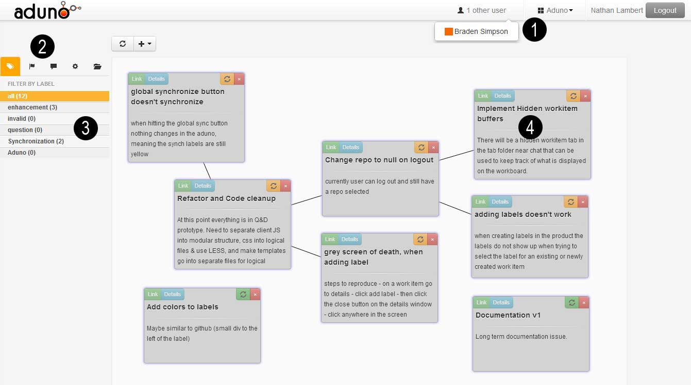

Motivation
This website describes the tool Aduno, created by Braden Simpson, at the SEGAL research lab at the University of Victoria. A paper discussing Aduno has been accepted at ICSE 2013, in the CHASE workshop.
What is Aduno?
Aduno offers a shared workspace where a software development team with a Github-hosted project, can collaboratively manipulate their workflow using visual components. Teams can sign in with their Github account details and access their repositories, and Aduno imports the project’s issues on the workspace in the form of work items. Users can create, edit, link, and move around work items to organize their joint actions, and coordinate about them by communicating through the tool’s chat area. In real time users can also see all changes that other team members are making on the work board and Aduno’s visual layout allows them to maintain workspace awareness. The contents of the work board can then be exported to Github’s issue tracker, integrated directly into the team’s workflow.
Screenshots
{kind=link}
The navigation bar showing online users, a repository browser, and the user settings / login options
The workflow panel. This shows multiple different tabs of information, Labels, Milestones, Repository settings, and workitems.
Shows the label tab. This is used for filtering the work items displayed on the workboard based on their labels. They are syncronized with the labels in the Github Repository.
A work item, it has a title, description, assignee, links, and can be dragged around as if it were a note on a whitebaord. This is the main data model in Aduno, and is representative of issues in Github.
Team communication and coordination is an integral part of the software development process and is a challenge whenever collaborating teams are distributed. Although it is typical for project management systems in services such as Github to allow comments on each issue, we have included a chat area in Aduno. The comments on work items in Github are used for asynchronous communication, and this was not sufficient for our tool. A chat system provides users with a secondary communication channel that allows them to engage in a synchronous discussion about work items that would not typically be appropriate for asynchronous work item comments. Since comments in Github must also be attached to only one work item, having this chat area helps teams develop broader goals and facilitates common ground through more in- depth conversation.
Persistent project data synchronization is an important and highly functional aspect of Aduno. The data modeled in Aduno is transferred as you work to issue trackers such as Github, meaning teams are able to enjoy the best of both worlds by using Aduno’s highly visual, real-time environment for design tasks, and smoothly integrating with their existing workflow. Once a user signs in Aduno with their Github credentials they have all their repositories and respective issues in place and they can select what they want to work on. When an edit is performed on a work item in Aduno, the “Sync” indicator at the top right of the item turns from green to orange to signal that there is an unsynchronized change. To synchronize with Github, the user may click on the “Sync All” button at the top of the page, or they may click on a work item’s “Sync” button to synchronize it individually. This gives the team more control over what work items get synced with the associated service.